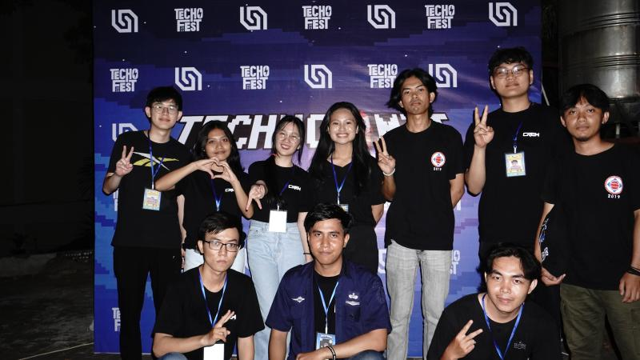
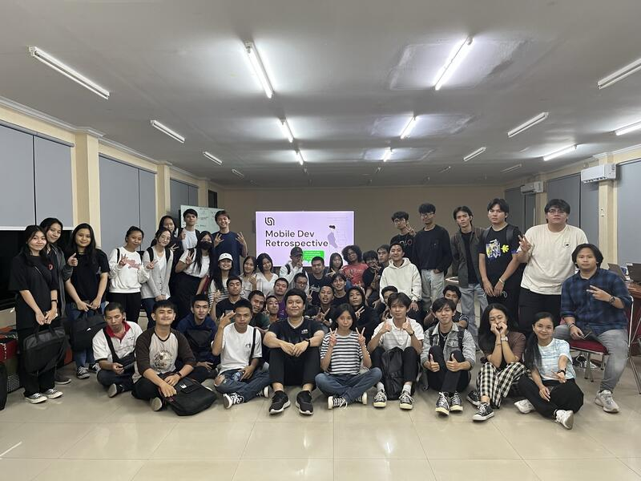
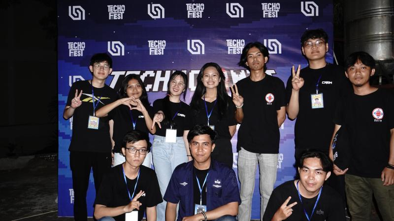
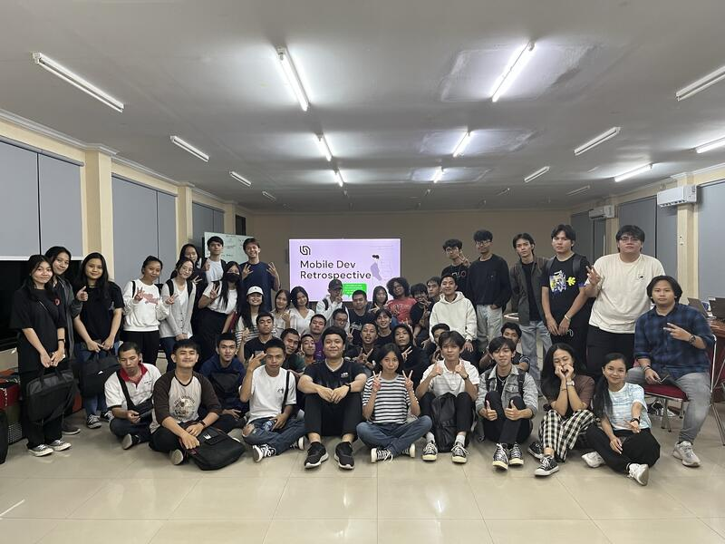

Blog
Berikut ada beberapa artikel yang dapat menambah wawasan kalian. Selamat Membaca!!!
Informatika dan Perkembangan Teknologi Masa Kini

Teknologi masa kini telah berkembang pesat dan memberikan banyak manfaat bagi manusia. Teknologi telah mengubah cara hidup manusia dalam berbagai aspek, seperti pendidikan, komunikasi, berbelanja, bisnis, medis, pertanian, transportasi, entertainment, dan layanan umum.
Penggunaan teknologi masa kini meningkatkan efisiensi, efektivitas, dan kualitas hidup manusia. Teknologi akan terus berkembang dan memberikan manfaat yang lebih besar bagi manusia di masa depan.
Sumber: https://binus.ac.id/bandung/2023/11/pemanfaatan-perkembangan-teknologi-masa-kini/
Dampak Positif dan Negatif AI dalam Masa Depan Pendidikan

Laporan Google: Future of Education menunjukkan bahwa AI akan membawa perubahan besar dalam dunia pendidikan, termasuk di Indonesia. AI memiliki potensi untuk meningkatkan kualitas pendidikan dengan mempersonalisasi proses belajar, meningkatkan kualitas pengajar, dan menerapkan pembelajaran seumur hidup.
Namun, AI juga memiliki dampak negatif seperti ketergantungan terhadap AI dan hilangnya kemampuan belajar. Untuk itu, diperlukan protokol dan aturan yang jelas untuk memastikan penggunaan AI secara bertanggung jawab.
Pemerintah perlu berinvestasi dalam infrastruktur, peralatan, dan pelatihan guru untuk mendukung penggunaan teknologi di sekolah. Tantangan konektivitas di daerah 3T juga perlu diatasi.
Secara keseluruhan, AI dapat menjadi alat yang bermanfaat untuk meningkatkan kualitas pendidikan di Indonesia, asalkan digunakan dengan bijak dan bertanggung jawab.
Sumber: https://undiknas.ac.id/2023/05/dampak-positif-and-negatif-ai-dalam-masa-depan-pendidikan/
Wajib Tahu Bahaya AI (Artificial Intelligence)

Kecerdasan buatan (Artificial Intelligence/AI) telah mengubah wajah teknologi dan membawa dampak besar pada kehidupan kita. AI telah memberikan solusi yang luar biasa dalam berbagai sektor, dari kesehatan dan transportasi hingga keuangan dan industri. Namun, di balik semua keuntungan ini, terdapat potensi bahaya yang tidak boleh diabaikan. Penting bagi masyarakat dan pembuat kebijakan untuk memahami dan menghadapi bahaya AI dengan bijaksana untuk menciptakan dunia yang aman dan berkelanjutan.
Sumber: https://stekom.ac.id/artikel/wajib-tahu-bahaya-ai-artificial-intelligence


 


